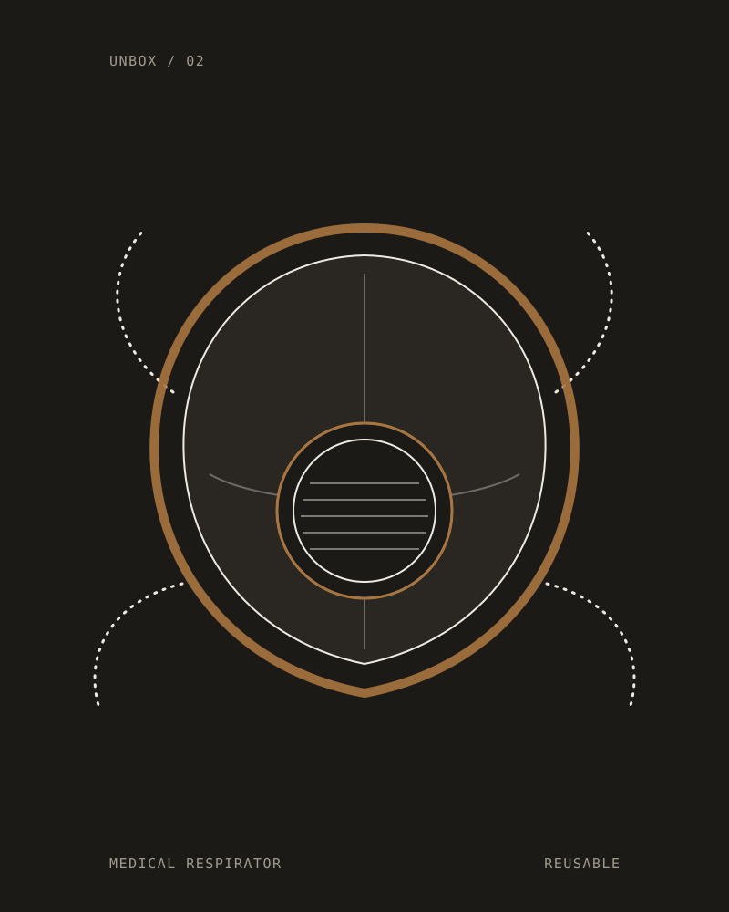
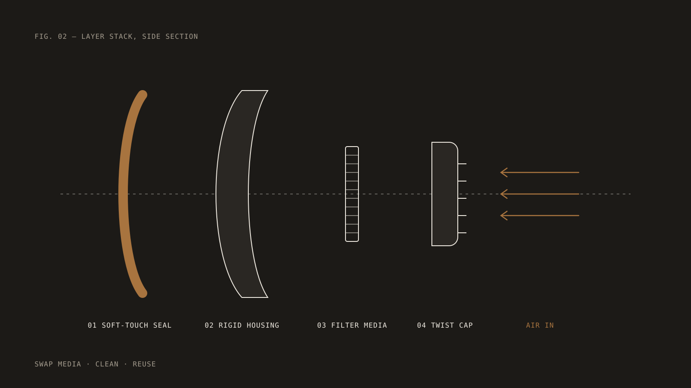

COVID Medical Respirator
A reusable, high-performance respirator designed to give healthcare workers a medical-grade alternative to disposable N95 masks — when disposables were running out.
- Category
- Medical · Personal protective equipment
- Scope
- Industrial design, ergonomics, mechanical design, prototyping
- Key features
- Soft-touch face seal, rigid housing, swappable filter media
- Context
- Pandemic response

Replace the filter, not the respirator. Clean the body and wear it again.
When the supply chain broke, the people at the front line were left improvising.
In the early months of COVID-19, single-use N95 respirators became one of the scarcest objects in the world. Healthcare workers were asked to stretch, reuse and ration equipment that was never designed to be worn twice.
We asked a different question: what if the respirator itself were designed to last — and only the part that actually does the filtering were thrown away?

A soft edge where it touches you. A rigid core where it protects you.
A respirator only works if it seals, and it only gets worn if it is comfortable for a twelve-hour shift. The design splits those jobs: a soft-touch seal follows the contours of the face and spreads pressure across the cheeks and nose bridge, while a rigid housing holds the geometry and keeps the filter where it belongs.
The housing is built to be versatile. Filtration media swaps in and out through a simple cap, so the expensive, durable parts stay in service and only the consumable is replaced — quickly, with gloves on, without tools.
Soft-touch face interface
A compliant seal that conforms to different face shapes and stays comfortable through long wear.
Swappable media
A versatile housing accepts replaceable filtration media, so the respirator outlives its consumables.
Made to be cleaned
Smooth, accessible surfaces and few parts make the respirator practical to disinfect between uses.
Urgency is a design constraint too.
Designing under pressure forced every decision to earn its place. Parts had to be producible quickly with processes that were actually available, assembly had to be obvious, and the product had to be understood in seconds by people with no time to read a manual.
That discipline — fewer parts, clearer function, real-world production — is now how we approach every project, crisis or not.